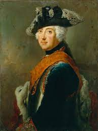

On his father’s death (1740), Frederick became king and asserted his leadership. He seized parts of Silesia during the War of the Austrian Succession, strengthening Prussia considerably. He invaded Saxony in 1756 and marched on into Bohemia. Frederick was almost defeated in the Seven Years’ War (1756–63), until his admirer Peter III signed a Russo-Prussian peace treaty that lasted until 1780. The First Partition of Poland in 1772 led to enormous territorial gains for Prussia. Austro-Prussian rivalry led to the War of the Bavarian Succession (1778–79), a diplomatic victory for Frederick, but continued fear of Habsburg ambitions led him to form a league of German states against Joseph II. Under Frederick’s leadership Prussia became one of the great states of Europe, with vastly expanded territories and impressive military strength. In addition to modernizing the army, Frederick also espoused the ideas of enlightened despotism and instituted numerous economic, civil, and social reforms.
